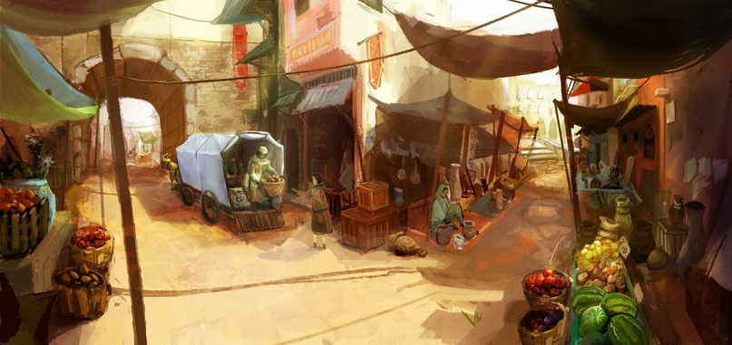

История острова

Колонизация и Эпоха Княжеств
Остров Поэдрум был колонизирован переселенцами из Гоэдроса ещё в незапамятные времена — он всегда манил золотоискателей своими богатыми запасами. Кому-то везло больше, кому-то меньше: самые богатые умудрялись нанимать себе охранников и рабочих, параллельно активно общаясь с местным населением — казалось, земли хватит всем, поскольку пустыни и правда казались бескрайними и богатыми.
Постепенно вокруг самых крупных золотоносных копей возникли поселения, которые росли, превращались в вольные города, а затем и в небольшие государства, которые враждовали из-за золота и спорных территорий. Это довольно быстро переросло в жёсткую войну мелких княжеств, продолжавшуюся не одно столетие. Крупные дома имели огромные ресурсы на армию наёмников и головорезов, которые долгое время проливали кровь на каменистые пустыни.
Орден Воли и мор
Порядка сорока лет назад на острове неизвестным основателем, которого сейчас называют Покровитель, был создан Орден Воли, поставивший своей целью освобождение рабов и горожан от бесконечных внутренних войн. Создание Ордена совпало с волной мора, охватившей Поэдрум. При заражении взрослый человек быстро покрывался уродливыми струпьями, через несколько дней он впадал в лихорадку и, пребывая в беспамятстве, страдал ещё много недель, медленно угасая. При заражении во время беременности болезнь вызывала уродство плода, в результате чего большинство детей умирали сразу после родов или прямо в утробе матери.
Животные, основной источник продовольствия, тоже были подвержены заболеванию — поэтому вместе с болезнью рука об руку шёл голод. Первыми без еды остались самые бедные слои населения, что способствовало небывалому росту революционных настроений, чем грамотно Орден и воспользовался.
Война Освобождения
Однако первое десятилетие Ордена ограничилось банальными мелкими восстаниями, которые были безжалостно подавлены армией наёмников. Первые серьёзные успехи появились на двенадцатый год, когда удалось убить главу одного из домов, а его армию обратить в бегство. Маленькая северная часть материка была освобождена. Приблизительно к этому времени болезнь начала отступать, и ситуация нормализовалась.
После трёх лет наращивания потенциала толпы вооружённых бывших рабочих и горожан начали мощные наступления, освобождая материк и уничтожая ослабшую власть. В итоге благодаря грамотной пропаганде, хорошей организации и мудрости лидера за двадцать семь лет существования Ордена удалось уничтожить все известные фамилии на Поэдруме и организовать новое одноимённое государство на принципах равенства и солидарности.
Помимо старых господ были низложены и старые боги — новым божеством был объявлен Демес, якобы существующий покровитель справедливости.
География Мериона · Поэдрум · История